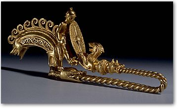

|
|
Gold Celtic Warrior Brooch Acquired for The British Museum The British Museum, with help from the Heritage Lottery Fund and the independent art charity the National Art Collections Fund, has acquired a magnificent gold brooch from the third century BC. The brooch is a unique piece of ancient jewellery of the highest quality of workmanship and of the greatest interest. A true masterpiece. It represents the meeting of the Greek artistic genius and the warrior world of Celtic Europe. The heavy gold brooch, or fibula, some 14 cms long, is dominated by the figure of a naked warrior wearing a Celtic helmet and carrying a Celtic shield, whose hunting dog eagerly jumps up at him. It was probably made in the third century BC by a Greek master-jeweller working abroad for a Celtic client, one who, to judge by the long-footed form of the fibula, lived on the Spanish peninsula. Greek craftsmen, including jewellers, travelled widely in the Mediterranean and beyond from the seventh century BC down to the second. This, however, is the only witness to a Greek jeweller's journey beyond the Pillars of Hercules. The local Iberian fibulae of the same form are in silver and are decorated with a warrior on horseback, accompanied by hunting dogs. In this unique gold version the Greek craftsman has simplified the narrative to a warrior and his hunting dog, who leaps up enthusiastically at his master, while the rest of the hunt motif is merely hinted at by means of the boar's head, which served as the sliding catch for the pin, and the other dogs' heads. The warrior is no
doubt the craftsman's representation of the owner himself. We do not know
where the fibula was found, but its acquisition by the Portuguese Royal
Family in the nineteenth century would seem to fit well with a burial
in a princely warrior tomb somewhere in the Iberian peninsula. The brooch was formerly in the collection of the Royal House of Braganza and perhaps collected by Ferdinand of Saxe-Coburg, consort of Queen Maria of Portugal. Most of the jewels of the Braganza dynasty were inherited in 1919 by HRH Nevada of Portugal, Princess d'Braganza and Duchesse d'Oporto. She emigrated to America and on her death in 1941 the collection was sold by her heirs to Warren Piper of Chicago. The fibula was purchased by Thomas.F. Flannery Jr in 1950 at the Warren Piper sale. After examination at the British Museum in 1965, it was displayed at the "Early Celtic Art" exhibition of 1970, held in Edinburgh and the Hayward Gallery, London. From 1993 until 2000 it was on loan to the British Museum.  The arched bow carries eight curls on its top, while the side panels are decorated with running spirals and loops that were once surrounded by blue enamel. Each end takes the form of a dog's head. The hinge or spring is lost, together with the brooch pin itself. When worn, this pin would have been held in place by the moveable catch-plate in the form of a boar's head. The long "foot" of the fibula is formed from two thick wires twisted together that end in the jaws of a dog with raised ears. Beyond a bead with spiral decoration is the forepart of a rearing dog with flattened ears. The front paws of the dog rest on the bottom of the large oval shield that is held by the naked warrior who seems almost to sit on the arched bow of the fibula. The warrior wears a Celtic helmet of Montefortino type, which probably had a tiny horn on either side. From a belt round his waist hangs a scabbard of La Tène I type, while his right hand grasps the hilt of a sword that had a three-lobed pommel also of La Tène type - the blade, now lost, must have pointed vertically upwards. The spindle-shaped boss of the oval shield marks it out too as of La Tène form. The warrior's eyes, like those of the animals were once filled with enamel, probably white surrounding a black centre. The form of the fibula with its long "foot" and the addition of human and animal forms is best parallelled in a series of silver and bronze fibulae from the Iberian peninsula, suggesting that this masterpiece in gold was specially created for an Iberian client. That the jeweller was a Greek is indicated by the style and quality of the figured forms and by the technology of the gold working and the enamelling. Price - Purchased at Christie's, 25th April 2001, for a total of £1,121,906. This purchase has been made possible with the aid of donations from various sources, including a grant of £577,157 from the Heritage Lottery Fund and one of £178,808 from the National Art Collections Fund. A further £363,000 came from British Museum funds with a special contribution from the British Museum Friends. Anthea Case, Director of the Heritage Lottery Fund, said 'This Celtic 'warrior brooch' is an exquisite piece of jewellery which will offer visitors to the British Museum a fascinating insight into the juxtaposition of Greek and Celtic cultures in ancient times. We are delighted to have helped the British Museum to acquire such a significant and beautiful brooch from the 3rd century BC which will be enjoyed by visitors for years to come'. David Barrie, Director of the National Art Collections Fund said 'The Art Fund reacted instantly to the British Museum's urgent request for a large sum to spearhead their fundraising campaign. This is a true masterpiece - a piece of mesmerising beauty and exquisite workmanship, that vividly evokes the world of the Celtic warrior'. For further information or visuals please contact the Press Office on 020 7323 8583 / 8525 / 8522
|
|
||
|
|
|||